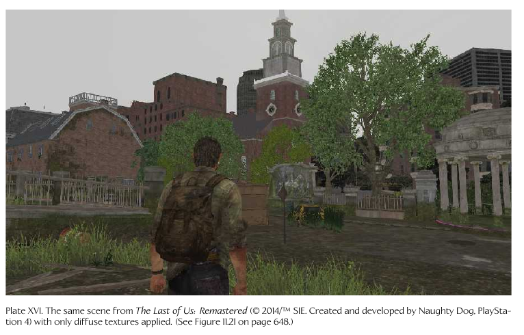
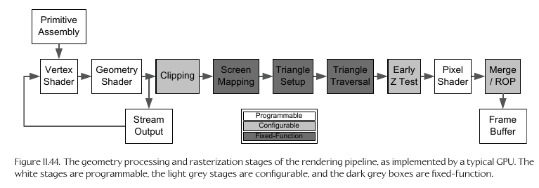

Why Triangle Meshes?
- Simplest Type of Polygon
- Always planar (3 vertices always form a plane)
- Mostly always remain triangles after transformations (at worst becomes line segment)
- Most graphics hardware designed around triangles
Triangle edges and face normal
- e1,2 = p2 - p1
- e1,3 = p3 - p1
- e2,3 = p3 - p2
- N = e1,2 x e1,3 / |e1,2 x e1,3|
- (cross product and vector length)
Back faced normals are culled (not drawn) based on winding order:
whether the vertices are defined in clockwise or counter-clockwise order
Coordinate Spaces: Model Space/Local Space/Object Space
- Origin/Center point 0,0,0 is the center of the current model/object or another
point relative to that object
- Axes Front, Left, Right (F,L,R) are defined as basis vectors
i,j, and k, e.g.
L = i, U = j, F = k
Coordinate Spaces: World Space
- Center coordinates 0,0,0 relative to the total/entire drawing scene
- Model to World Matrix, a.k.a the world matrix
- Upper Left 3x3 mat RS is the rotate and scale matrix, then bottom left tm
vector is translation from model space expressed in world space
- Model to World matrix using model space unit vectors i,j,k from above,
- Translating a vertex from model to world space using this world matrix:
Light-Object interactions
Light can be:
- absorbed
- reflected
- transmitted via refraction (bent while going through an object)
- diffracted (when going through a small opening)
Sub-surface scattering: light enters and object, bounces around, then
exits at a different location and angle. Gives skin, wax, marble their
warm appearance
Vertex Attributes (possible data included for each vertex)
- Position vector
- Vertex Normal
- Vertex tangent and bitangent
- When combined with the vertex normal, defines 'tangent space', used
for per-pixel calculations like normal and environment mapping
- Diffuse Color
- Specular Color
- Texture coordinates (u,v)
- 0,0 is bottom left and 1,1 is top right
- Skinning weights (k,w)
- for skeletal animation: vertices are attached to a joint via index k,
with each joint weighted influence w
Gouraud shading
- Shading on a per-vertex basis, coloring pixels in-between interpolated
Texture Types
- Diffuse map/Albedo map
- Contains the diffuse color at each texel
- Normal Map
- stores unit normal vectors at each texel as RGB values
- Gloss Map
- how shiny a surface should be at each texel
- Environment Map
- picture of the surrounding environment for reflection rendering
Mip-mapping
- Making smaller versions of the texture, half the size each time, for use
when rendering the textured surface further away
Materials
- Used to store all visual properties of a mesh
- i.e. textures, shader programs to use, input params to shader, etc.
- does NOT include vertex attributes - are instead paired with the material
for the complete picture
Lighting Models
- Lighting makes a huge difference in realism:
- Just lighting

- Without lighting

- With Lighting:
- Direct lighting
- light is emitted and bounces off a single object
- called "local illumination models" - objects do not affect each others
appearance
- Indirect Lighting
- bounces off multiple objects
- called "global illumination models" - object affect each other as light
bounces and hits others
- ray tracing and radiosity methods are examples
Phong lighting
- most common local lighting (local illumination) method
- Uses the following vertex attributes:
- ambient: overall lighting level
- diffuse: main color of the object when light is reflected off it
- specular: bright hilights for shiny objects
- Uses the following values:
- view direction vector V
- Ambient intensity A
- surface normal N
- ambient reflectivity, diffuse reflectivity, specular reflectivity, glossiness
exponent α
- light color intensity Ci, direction vector Li from reflectino point to light source
- one i for each light source
Bi-directional Reflection Distribution Function (BRDF)
- Terms used by phong lighting are an example of this
- calculates ratio of reflected radiance (V) along
a view direction to incoming irradiance (L)
Light types
- Static
- light is pre-calculated and stored per-pixel in a light map
- ambient
- global/independant of position and directon, simply applied to all
areas
- Directional
- like sun-rays; infinite distance but has direction
- Point/omnidirectional
- light emits in all directions from a single point
- Spot light
- emits rays in a cone-shape, like a flashlight; closer to center
of cone the higher the light intensity
- Area lights
- lights that don't emit from a single point; instead from
an area
- Emissive objects
- such as glowing crystal ball, flames, etc.
- use emissive texture map, so the texture at the desired emit locations
are always full intensity, such as a neon sign, car headlights
View Space/Camera Space
- Origin point is the 'camera'
- World to View space matrix is inverse of View to World space Matrix
- Can combine both model-to-world and world-to-view matrices in a single
matrix:
Perspective and Orthographic projection
Depth Buffering/Z Buffering
- each fragment stores its depth in the depth buffer when its color is
stored in the frame buffer
- When another fragment from a different triangle trys to draw at the same
location, the depths are compared and the one that is smaller is stored
Rendering pipeline stages
- The first two stages: tools (Creation of the assets) and the asset conditioning
pipeline (ACP, conversion of formats and storage, etc.) are done before and outside
of the actual program
GPU pipeline

Alpha Blending
- Combines the color of two pixels based on the alpha of the incoming component
(that is writing to the pixel with an existing color)
- C'D = ASCS + (1-AS)CD
- S = source, D = destination
Heterogeneous System Architecture
- On playstation 4, AMD Jaguar System on a Chip (Soc)
CPU and GPU share memory via heterogeneous
unified memory architecture (hUMA)
- Shaders are given input via a shader resource
table (SRT) that can be accessed by both CPU and GPU
Non-heterogenous shader memory (registers)
- GPUs contain registers which are accessed by the shader
- 128-bit SIMD format, allowing for 4 32-bit float values (a vec4) per register
- Input registers (incoming vertex data)
- Constant Registers (attributes such as model-view matrix)
- Temporary registers (internal calculations)
- Output registers (filled in by the shader, i.e. output pixel color)
- Texutre maps (read-only memory for the shader) via coordinates as oppsed to
memory addresses
Anti-aliasing types
- Full-Screen Antialiasing (FSAA)/Super-sampled antialiasing (SSAA)
- Scene rendered first to frame buffer larger than the actual screen, then
downsampled to actual screen size
- rarely used due to memory requirements and computation
- Multisampled Antialiasing (MSAA)
- focuses on the edges of triangles since that's where the jaggedness occurs
- uses subsamples based on a number of points (2,3,5,8 or 16)
- Coverage Sample Anti-aliasing (CSAA)
- optimization of MSAA
- pixel coverage test is performed for 16 'coverage subsamples' per fragment
- gives quality of 16x MSAA with cost of 4x MSAA
- Morphological Anti-aliasing (MLAA)
- focuses on scene points that suffer from AA
- scene rendered at normal size, then scanned to look for stair-stepped patterns
then blurs those areas
- Subpixel Morphological Anti-aliasing (SMAA)
Application stage of rendering pipeline
- Visibility determination: don't submit non-visible objects for drawing in order
to save performance
- frustum culling
- occlusion and potentially visible sets
- portals/occlusion volumes (anti-portals)
- submit geometry to GPU for drawing
- creates a GPU command list, i.e. "set render state for material 1, submit prim A, submit prim B, ..."
- control shader parameters and render state
Scene Graphs
- Way to store objects in scene so that its easier to tell what and what not
to submit to the GPU for drawing
- Usually some kind of tree structure
- Quadtrees/Octtrees
- Bounding Sphere trees
- BSP (binary space paritioning) tree
When to use a scene graph
- don't need one for mostly static environment like a fighting game
- mostly indoor environments: portal or BSP system
- mostly outdoors, flat terrain, from above: quad tree
- outdoors from person on ground with many objects: antiportal system
Advanced lighting
Global Illumination
- Shadow rendering
- Penumbra: blurred edges of a shadow
- Shadow volumes: each shadow casting object viewed from light source,
silhouette edges identified; uses stencil buffer to mask shadowed pixels
- Shadow maps: per-fragment depth test from light viewpoint, shadow map
texture generated and saved in depth buffer; scene then rendered, then shadow
map used to determine if each fragment in shadow or not
- Ambient Occlusion
- contact shadows; describes how accessible each point on a surface is to
light
- Reflection: A static texture of the background scene surrounding the surface
(i.e. the mirror) is drawn on the surface, then the scene to be reflected is
rendered from the reflected POV of the camera and drawn on top of the surface
as another texture
- Caustic highlights: hilights from highly reflective surfaces like water/metal,
and when the surface moves it causes the reflections to move, like when under water.
Done via a possible animated texture with semi-random bright hilights
- Subsurface Scattering
- light enters, bounces, leaves, results in warm glow (skin, marble, etc)
- BSSRDF (bidirectional surface scattering reflectance distribution function)
- Use shadow map but instead of determining shadowed pixels, instead how far
beam of light travels to pass through the object
- Precomputed Radiance Transfer (PRT)
Deferred Rendering
Physically Based Rendering
Particle Effects
- Composed of very large number of simple geometry
- often camera-facing
- semitransparent or translucent
- animated
- spawned and killed continuously

Decals
- simple geometry overlayed on objects like bullet holes, foot prints, scratches
- defined by a rectangular area that is projected along a ray into the scene,
and is applied to whatever the ray hits first
Skies
- Sky rendering usually done after the rest of the scene is rendered,
so only need to draw non-occluded areas
- Z buffer val set to maximum since its the furthest away
- Can uses a sky dome or sky box
- Clouds can be done via camera-facing cards (billboards), particle effect,
or volumetric effects
Terrain
- Height field terrain: stored in grayscale texture map
Water
- Can use dynamic motion simulation, dynamic tesselation, other
level of detail (LOD) methods based on closeness
- Can interact with physics system (e.g. flotation, slippery surface, swimming)
- Combination of different systems such as shaders, scrolling textures, particle
effects for mist, etc.)
Overlays
- Rendered after scene finished, with Z-test disabled so they're always on top
- Typically rendered in view or screen space so not effected by world-view
etc.
Text/Fonts
- Texture map known as 'glyph atlas'
- Another option is rendering via library like FreeType which uses besier curves
Gamma correction
- Adjust color intensity via a gamma power to compensate for screen range
- Vout = pow(Vin, γ)
Full screen post effects
- Applied after 3d scene rendered for special effect:
- Motion blur via a convolutional kernel
- Depth of field blur: uses depth buffer to adjust blur for each pixel
- Vignette: brightness/saturation at corners decreased or a texture
is overlayed on screen, for example binocular view effect or scope
- colorization, for example make al pixels grayscale except red
Further Reading
- Overview of entire 3d process for games/film:
- The Art of 3-D Computer Animation and Imaging, 2nd ed, Isaac Kerlow
- modern real time rendering:
- Real Time Rendering, 3rd ed, (2008), Hoffman, Haines, Moller
- definitive reference guide for graphics:
- Computer Graphics: Principles and Practice in C, 2nd ed, Foley, Dam, Feiner, Hughes
- Math of rendering:
- Mathematics for 3d Game Programming and Computer Graphics, 2nd ed, by Lengyel
- Graphics gems series
- Gpu gems series